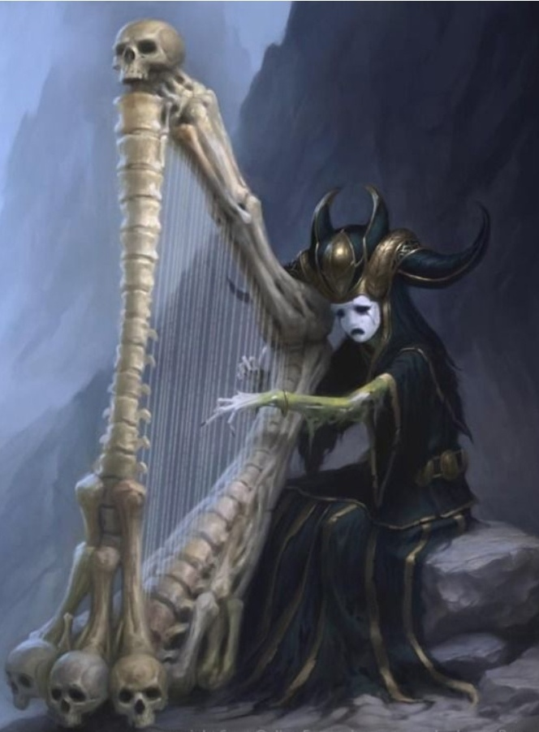

Брат и сестра, круглые сироты, единственные выбравшиеся из лесного пожара с помощью невероятной удачи. Большая семья выступала по городам с различными представлениями. Кто-то гибкий акробат, кто-то искусный фокусник, кто-то дрессировал зайцев и белок и те могли встать в причудливую башню, стоя на спине медведя, или выполнять прочие забавные команды. Однако все они оказались слабы перед лицом стихийного бедствия. Может, кто-то ещё уцелел в тот день, но все, кто мог, разбежались в разные стороны и больше не виделись. Так, тринадцатилетний мальчик и девочка на год младше попали в крупный город Империи.
Хотя Судный день был восемь лет назад, многие жители до сих пор оглядывались, боясь чего-то. Большинство при приближении этой яркой парочки отворачивалось или прогоняло восвояси, но некоторые помнили их и предлагали помощь. Кто монетку даст, кто угостит хлебом или водой. Один и вовсе предложил пожить у него в надежде, что кто-нибудь из родни объявится. Пару лет дети жили у него, давая неподалёку от его дома небольшие концерты. Мальчик показывал фокусы в сопровождении небольшой арфы его сестры. Так было, пока они не попались страже. Те их схватили и отвели во дворец. И посадили бы погорельцев в тюрьму, если бы не сын главы, старше шута на несколько месяцев. Тому понравилась музыкантка и он предложил папе оставить их и пополнить ряды придворных весельчаков. Пару не без презрения помыли, нарядили и отправили в отдельную комнату, где жили более старшие и опытные шуты, среди которых был и их дядя с женой, попавший сюда задолго до пожара.
Затем всё было хорошо, пока арфистка не достигла шестнадцати. После очередного представления подвыпивший дворянин решил надругаться над ней, за что незамедлительно получил по лицу от брата. Его посадили в тюрьму, а через время и сестру за то, что она отказала пьяному домогателю и ударила того пару раз инструментом. Оба приготовились к голодной смерти или казни, но вдруг их дядя, в прошлом карманник, открыл их камеру, указал им примерный путь наружу и ушёл. Те, чудом миновав стражу, побежали к открытому окну, как увидели Иллюзиониста. Они почувствовали в нём тьму и остановились, как вкопанные.
Илл: «Здравствуйте, детишки. Куда путь держите?».
Девочка села на пол и сжалась, а брат встал перед ней, готовясь защищаться.
Илл: «Не волнуйтесь, я знаю, кто вы. Я не хочу навредить вам.».
В это время за их спиной показался стражник, решивший позвать помощь, но демон одним движением швырнул в того карту. Человек растворился в чёрном дыме. А когда облако пропало, на его месте была только окровавленная карта, тотчас притянутая подошедшим к детям демоном и показанная мальчику.
Илл: «Видите? Я для вас безопасен. Если, конечно, вы будете меня слушаться.».
«А куда делся стражник?», - спросил юноша. «Тебе лучше не знать. Оттуда нет выхода.» - с улыбкой ответил Собиратель душ – «Джастин, Силина, пойдёмте отсюда. Здесь нам делать нечего.». Мальчик пытался сказать, что их зовут не так, - демон заявил, что им их имена скоро будут не нужны. Он взял их за руки и перенёс в лесную хижину, где уже горел камин и пахло жареной курицей.
-Он похож на тот, где мы жили раньше.
-Спасибо, я старался.
-Правда? Как вы это сделали?
-Магия). А чего твоя сестрёнка молчит? Не ест ничего, забилась в уголок и рыдает.
-Она напугана.
-Согласен, не каждый же день напившийся урод принуждает к соитию. Считай, что его уже не существует.
-Что? Ты убил его?
-Ага.
-Я только сейчас вспомнил, кто ты такой! Ты – Иллюзионист! В нашей семье о тебе все знают! *Вытаскивает из-под себя табурет и пытается им закрыться, но потом начинает плакать.* «Знали.».
-Да, я демон. А что ты ожидал? Что вас спасёт какой-нибудь крылатый броненосец? Наивный. Несколько таких уже разбирается с убийством правительского сына.
-Откуда ты знаешь? Я тебе не верю!
-Пока что у тебя нет выбора. Не беспокойся. Всё, что мне нужно – это сильные союзники. Вот когда ты с сестрой примете демоничество – тогда я вас познакомлю с уцелевшей семьёй.
-Что? Не только мы выжили тогда? Ты лжёшь!
-Зря ты так. Мама жива-здорова, папа с обгоревшими ногами, но в основном цел. Животные многие пострадали – невелика потеря, дрессировщика медведь закрыл. Может, ещё кто пережил. Я не знаю.
-Покажи мне. А где Мила?
Илл2: *Открывает дверь, держа на плече девочку.* «Недалеко убежала. Она устала от ругани вашей.».
-Видишь, даже ей надоело так жить. Мы это исправим.
Через секунду все трое оказались в Аду.
-Ты что сделал?! Ты перенёс нас в Преисподнюю?!
-Ты абсолютно прав. Отсюда ты выбраться не сможешь, а если попробуешь сбежать – тебя найдут.
-Но я должен увидеть свою семью.
-Станешь демоном – увидишь.
-Что?! Я?! Ни за что!
-И твою сестру мы тоже обратим. Поглотитель может и всю твою родню превратить в демонов, но на это может уйти три дня. Можно и убить всех, но ни один из них не станет грешной душой.
-Что? Ты безумец! Ты не можешь так поступить!
-Милый мой, я воссоздал точную копию твоего дома, отправил человека в другое измерение и перенёс тебя с сестрой сюда, просто захотев этого. Я же сильный Высший демон, мне под силу очень многое.
К ним подходит Зависть.
З: «А Коллекционер умеет выбирать время и место...»
После этих слов иллюзия Собирателя исчезла.
-Что здесь вообще происходит?!
З: «Анархия. Случайная и полная.».
-А ты кто такой? Чтобы даже мальчик указывал мне, что делать...
Появившийся из-за спины Энвор поверг обоих в шок. Брат с сестрой упали на землю в обмороке.
З: «Вот ведь слабаки. Вроде взрослые, а испугались… Пошли, друг, отнесём их к Тьме.».
Очнулись те уже в клетке. Вне её сидели Дарк и Хищная тьма и играли на большой доске в клетку большим числом, по-видимому, костяных фигур. Некоторые уже были за пределами поля. Увидев всё это, парень быстро поднялся и бросился на решётку.
ХТ: «Джастин, привет. Поздравляю с с днём рождения.».
-Какой день рождения? Он только через пару месяцев!
ХТ: «Я проткнул тебя клинком бледной луны и очернил твою ауру. Ты, как и любой человек, не пережил этого и отправился на распределение. Там тебя распознали как грешную душу и отправили сюда. Поэтому ты теперь официально являешься демоном.
-Чего?!
К: «Посмотри на свою обувь. Сними колпак.»
Джастин увидел, что его костюм потемнел, а колпак у основания не двигался.
ХТ: «Позади тебя есть зеркало. Подними концы убора».
На висках юноши торчали рельефные конусообразные отростки, изогнутые вниз.
К: «Это твои рога. Они должны в определённое время увеличиваться в размере вместе с тобой.»
-Вот ведь… Я ничего не помню… А что с моей сестрой?
К: «Она ещё не проснулась. Хочешь – разбуди её.».
На Силине оказалась неснимаемая маска печали. Сама она была в изящном халате с длинными рукавами.
ХТ: «Преображение не завершено. Нужно пройти ритуал – и тогда вы станете полноправными демонами.».
-Другого выбора у нас нет...
Со временем Безликий шут освоил в равной степени неплохо магию земли, огня и воды, научился контролировать свои превращения и после ритуала стал слабым высшим демоном. Сестра же его, ныне средний житель Ада, получила костяную арфу большого размера, которая могла превращаться в небольшую лиру. Её звуки слышат те, кто видел смерть. И многие от мелодии сходят с ума от тоски. Ещё через пару лет к ним присоединился ещё один слабый высший демон – Безликий скрипач, смычок которого с другой стороны был полноценным мечом.